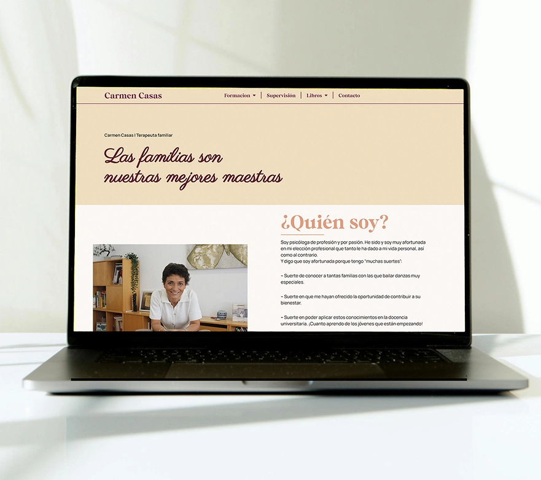
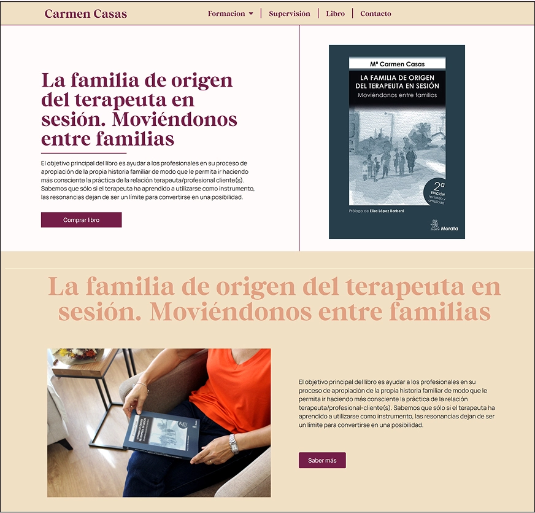
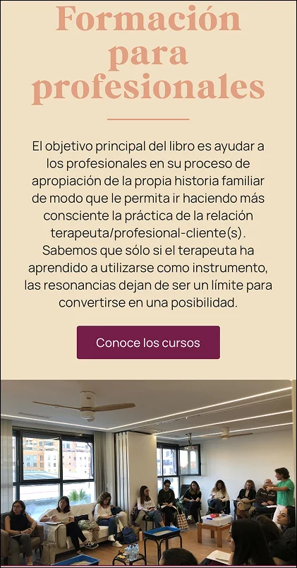
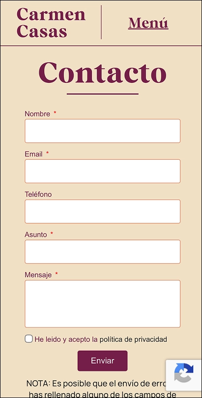
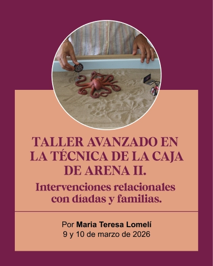
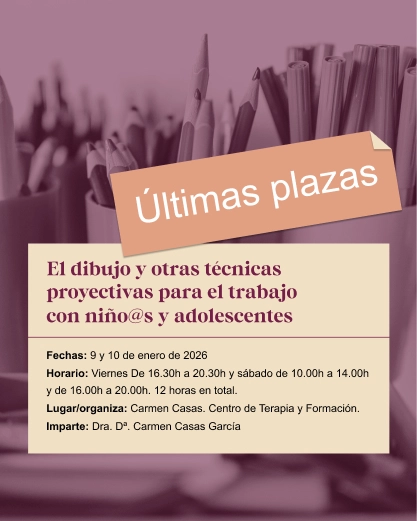

proyecto - Carmen Casas
Diseño web
Carmen Casas es una psicóloga especilizada en terapia familiar. El objetivo principal de la web es, por un lado, promocionar las publicaciones de Carmen Casas, y promocionar los cursos y grupos de supervisión enfocados a otros profesionales de la psicología.
Visita la página web



Además de la web, se trabaja un pequeño manual de marca que permite crear piezas gráficas para las redes sociales y la ocmunicación digital de la psicóloga.

